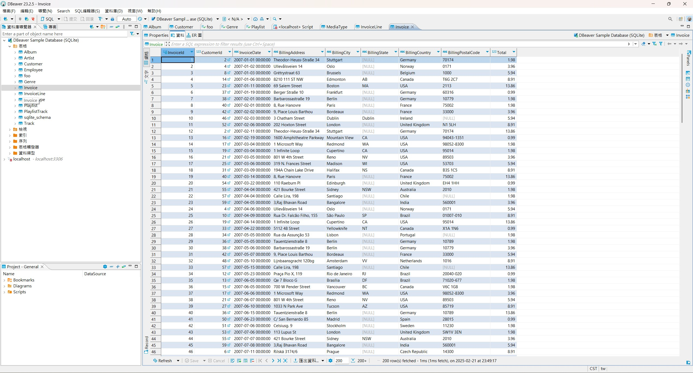
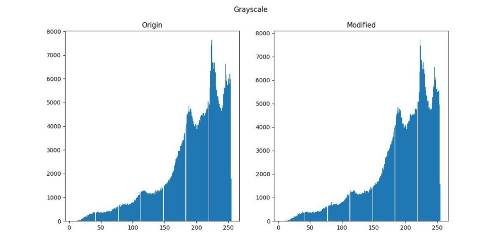
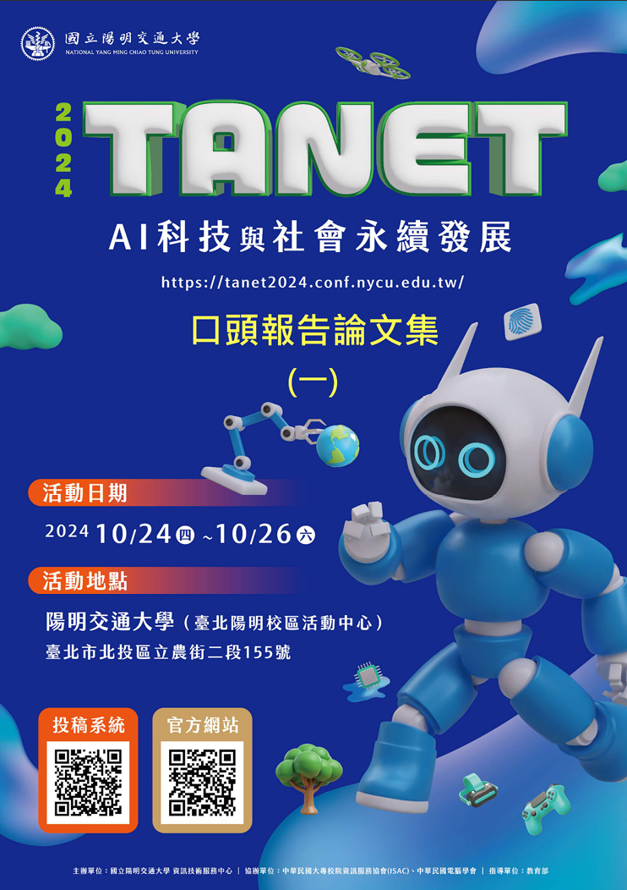

National Cheng Kung University
M.S. in Computer Science and Information Engineering
- Medical Imaging
- Generative AI
- Computer Vision
HELLO, I'M
Computer Science Graduate Student · Software Developer
I build practical software across web applications, backend services, automation tools, and AI-powered systems—from idea to deployment.
A LITTLE ABOUT ME
With a bachelor's degree in Computer Science and Engineering and ongoing master's training, I have built hands-on experience across web applications, backend APIs, desktop tools, databases, and systems programming.
I enjoy turning requirements into usable products—from designing interfaces and integrating APIs to automating workflows and deploying services. I am especially interested in software engineering and IT opportunities where I can solve real problems, learn quickly, and contribute across the development lifecycle.
Technologies I use across research and software development.
My academic journey in computer science, from software foundations to medical imaging research.
M.S. in Computer Science and Information Engineering
B.S. in Computer Science and Engineering
PROFESSIONAL EXPERIENCE
Building production-ready software through data engineering, automation, and cross-functional collaboration.
AUO Corporation
Project-based Internship
ACADEMIC SERVICE
Supporting course operations, student communication, capstone projects, and academic activities during my master's program.
Course Support
Project & Competition Support
Program Support
Teaching Assistant
AWARDS & RECOGNITION
Recognition across software projects, academic performance, and long-term personal development.
Computer Science and Information Engineering Project Contest
Project period: Sep 2023 - Jun 2024
Weiqi Association of the R.O.C.
National Chung Hsing University
SELECTED WORK
A selection of research and software projects where I turn technical ideas into practical systems.
A computer vision system that combines YOLO, optical flow, image processing, and IoU analysis to identify vehicles that fail to yield to pedestrians and automatically send event notifications.
LIVE ON THE WEB
Interactive projects you can open and try directly in your browser.
An interactive tarot experience that simulates card drawing and orientations, then uses the Gemini API to generate personalized readings from the selected spread.

A Python desktop interface for searching and exploring structured IMDb movie information through a database-backed application.

A system for embedding and extracting secret messages in images while minimizing visible distortion through custom encoding techniques.
RESEARCH & PUBLICATIONS
Research that connects computer vision methods with a practical road-safety application.

Taiwan Academic Network Conference (TANET 2024)
A computer vision study combining object detection, optical flow, image processing, and IoU analysis to identify vehicles that fail to yield to pedestrians.
LET'S CONNECT
I am open to software engineering and IT opportunities, project collaboration, and conversations about web development, backend systems, automation, and practical AI applications.
Email is the best way to reach me. You can also explore my code, professional profile, and technical notes through the links here.
Send me an email